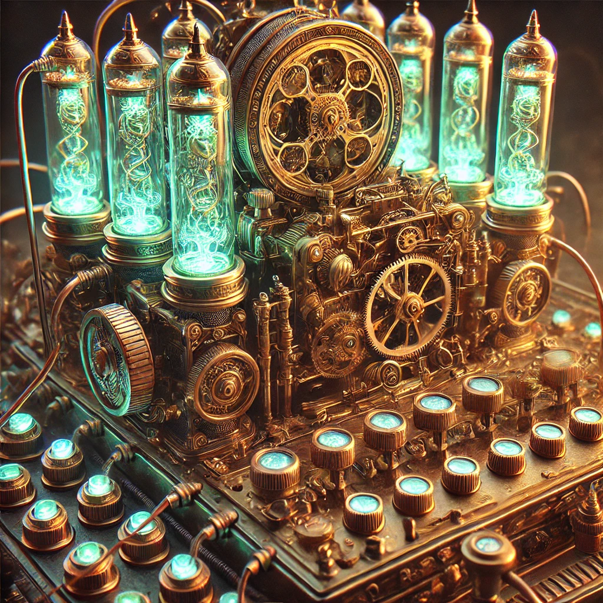

BellChime® Communicator: The BellChime® Communicator is an advanced Electrique device designed by the renowned Technomancer Alexander Graham Bell. This marvel of communication technology features a polished brass frame, with intricate copper wiring running along its edges, conducting Ether-enhanced energy. The centerpiece of the device is a large, ornately engraved bell-shaped receiver, which emits a soft chime when a call is received. The communicator’s handset, made of dark walnut wood and inlaid with brass filigree, fits snugly into a cradle atop the device. The dial, a series of rotating cogs and gears, allows the user to manually select the recipient’s frequency. When in use, the BellChime® Communicator produces a clear, melodious tone, eliminating the harsh noises typical of lesser devices. The communicator is wired into the city’s EtherGlow® network, ensuring smooth and uninterrupted communication within protected urban areas, though its range is limited to the boundaries of the city wards.
Electrique Lightbulb (EtherGlow® Orb): The EtherGlow® Orb is a beautifully crafted glass sphere that encases a filament of refined Ether, casting a soft, eerie light. The bulb is mounted in a delicate brass frame, with thin copper wires spiraling within the glass, conducting the Ether's energy. The light emitted by the Orb is a cool, ghostly blue, cutting through the darkness with an otherworldly glow. The bulb itself seems to pulse with life, casting dancing shadows that twist and turn as if alive. These Orbs are a common sight in the fog-shrouded streets of London, their spectral light guiding the way through the gloom.
Dirigible Airship (AetherLift® Cruiser): The AetherLift® Cruiser is a massive airship, its hull clad in gleaming brass plates and adorned with intricate, gear-driven mechanisms. The ship is powered by a combination of steam engines and Electrique turbines, their constant hum resonating through the vessel. The airship's balloon is reinforced with a lattice of steel cables and glowing Ether tubes, providing both lift and stability. The Cruiser glides effortlessly through the sky, its silhouette a familiar sight over the city. The interior is a marvel of Victorian elegance, with polished wood panels, brass fittings, and plush seating for the ship's wealthy passengers. Crew members tend to the intricate controls, their hands deftly adjusting the myriad levers and dials that keep the airship on course. Airship travel within city-states is only possible due to massive vertical ward extensions. These are tower-mounted Aetheric emitters that consume immense quantities of Pax Aetherium. These ward channels create narrow, elevated corridors of safety that allow airships to operate above the urban core. Because of their energy demands, only the wealthiest districts maintain such infrastructure, and only the elite can afford regular access.
Clockwork Familiars: These mechanical creatures are a testament to the ingenuity of Electrique engineering. Each Familiar is a blend of brass, steel, and Ether-infused crystals, their bodies powered by a small Aetheric Engine housed within. The creatures' eyes glow with a faint blue light, a sign of the Ether coursing through their systems. Their movements are smooth and precise, thanks to the intricate network of gears and springs that drive their limbs. Whether serving as household assistants, laborers, or even companions in battle, these Familiars are a common sight in the world of Cirque Electrique.
Ward Generators: These massive machines are the backbone of civilization's defense against phantasmal threats. Encased in thick, reinforced metal shells, the generators hum with the power of steam engines and Electrique turbines. Rows of glowing Ether tubes line the sides of the machine, pulsing with energy as the generator creates a protective field around its surroundings. Larger models, powered by Steam Drills, can shield entire cities, while smaller versions are used by circuses to protect their encampments. The generators are adorned with symbols and runes, etched into the metal to enhance their protective capabilities.
Gyroscopic Levitation Platforms: These floating platforms are a marvel of Electrique engineering, their levitation sustained by a combination of gyroscopic stabilization and Etheric thrust engines. The platforms are encased in a framework of polished brass and steel, with glowing Ether tubes providing the necessary lift. Large gears and rotating rings beneath the platform maintain balance and stability, even under heavy loads. These platforms are used for construction, transportation, and even as mobile stages for performances, their movement as smooth as the glide of an airship.
Aetheric Carriage: This steam-powered carriage is a blend of Victorian elegance and Electrique innovation. The carriage's body is constructed from polished wood and brass, with cushioned seats and ornate detailing. A small Aetheric Engine powers the carriage, providing smooth acceleration and control. The wheels are reinforced with steel rims, and the carriage's suspension system ensures a comfortable ride over rough terrain. Ether tubes embedded in the carriage's frame provide additional stability and illumination, their glow casting a soft light over the interior. While exceptional for city taxi services and chauffeuring celebrities and the rich, Aetheric Carriages haven’t taken off in the broader sense, mostly due to the constraints of the roadways, populations, and wildly inefficient consumption of ether.
AetherRail® Locomotive: is a masterpiece of Electrique engineering, seamlessly blending brass, steel, and glowing Ether tubes into a sleek, powerful train. Its spiraling Aetheric Engine draws energy from the environment, propelling the locomotive with unmatched speed and stability across the tracks. Inside, passengers experience Victorian luxury with plush velvet seats and polished mahogany interiors, all softly illuminated by EtherGlow® Orbs. This train is not just a mode of transport; it symbolizes the height of technological progress and societal advancement, connecting cities and communities while showcasing the elegance and power of Electrique innovation.
AetherWave® Vessel: is a marvel of Electrique maritime design, featuring a reinforced steel and brass hull that glows with Ether-infused plates, making it both strong and buoyant. Powered by an advanced Aetheric Engine and rotating turbines encased in glowing Ether tubes, the ship navigates treacherous waters with ease. Onboard, the luxurious cabins and control panels bristling with intricate gearwork reflect the fusion of elegance and technology. The AetherWave® is more than a ship; it’s a floating testament to the power of Electrique innovation, safely transporting passengers through phantom-haunted rivers while embodying the grandeur of being a technological marvel.
Flux Sensors: These devices are small, handheld units that detect fluctuations in phantasmal energies. The sensors are constructed from polished metal and wood, with a small display screen that provides readings of the energy levels. The device's core is a small Aetheric Engine, which powers the sensors and provides the necessary amplification to detect even the faintest fluctuations. The sensors are often used by investigators and engineers, providing early warnings and forensic insight into phantasmal activity.
Aetheric Excavator: The Aetheric Excavator is a massive, steam-powered drill designed for rapid excavation and digging. The excavator's frame is constructed from heavy-duty metal and reinforced with brass fittings, its drill bit a spiraling spike of hardened metal. The drill is powered by a combination of steam engines and Electrique conduits, providing the necessary power to bore through rock and earth with ease. The excavator's controls are simple, with a series of levers and dials that adjust the drill's speed and direction. Glowing Ether tubes run along the sides of the machine, providing illumination and added stability during nighttime operations.
AetherLift® Apparatus: The AetherLift® Apparatus is a mechanical crane designed for heavy lifting and construction tasks. The crane's frame is constructed from heavy-duty metal and reinforced with brass fittings, its winches powered by steam engines and Electrique conduits. The crane's arm is equipped with a series of gears and pulleys, providing the necessary lift and control for heavy loads. The crane's controls are simple, with a series of levers and dials that adjust the lift and rotation of the arm. Glowing Ether tubes run along the sides of the crane, providing illumination and added stability during nighttime operations.
Electro-Saw: The Electro-Saw is a powerful cutting tool designed for metal and wood. The saw's frame is constructed from polished metal and wood, with a small Electrique motor powering the blade. The blade itself is a circular disc of hardened steel, its edges honed to a razor-sharp edge. The saw's controls are simple, with a trigger that activates the motor and a dial that adjusts the speed of the blade. The saw is equipped with a safety guard, which retracts when the blade is activated. Glowing Ether tubes run along the handle of the saw, providing illumination and added stability during nighttime operations.
Aetherial Hammer: The Aetherial Hammer is a powerful tool designed to amplify strikes with energy pulses. The hammer's frame is constructed from heavy-duty metal and wood, with a small Aetheric Engine powering the head. The hammer's head is a large, flat block of hardened steel, with a series of copper wires running along the sides. The hammer's controls are simple, with a trigger that activates the engine and a dial that adjusts the strength of the energy pulses. The hammer is equipped with a safety guard, which retracts when the head is activated. Glowing Ether tubes run along the handle of the hammer, providing illumination and added stability during nighttime operations.
Steam-Powered Trowel: The Steam-Powered Trowel is a versatile construction tool designed for masonry work. The trowel's frame is constructed from polished metal and wood, with a small steam engine powering the blade. The blade itself is a flat, triangular piece of hardened steel, with a series of copper wires running along the edges. The trowel's controls are simple, with a trigger that activates the engine and a dial that adjusts the speed of the blade. Glowing Ether tubes run along the handle of the trowel, providing illumination and added stability during nighttime operations.
SteamPress® Attire Refresher: The SteamPress® Attire Refresher is a machine designed to clean clothes efficiently. The refresher's frame is constructed from polished metal and wood, with a small steam engine powering the mechanical agitation. The refresher's interior is lined with rotating brushes and steam vents, ensuring that clothes are cleaned thoroughly. The refresher's controls are simple, with a dial that adjusts the speed of the brushes and a switch that activates the engine. Glowing Ether tubes run along the sides of the refresher, providing illumination and added stability during nighttime operations.
ClockWork® Culinary Processor: The ClockWork® Culinary Processor is a mechanical device designed for rapid and efficient chopping, grinding, and blending of ingredients. The processor's frame is constructed from polished metal and wood, with a small steam engine powering the rotating blades. The blades themselves are made from hardened steel, their rotation driven by a series of gears and pulleys. The processor's controls are simple, with a trigger that activates the engine and a dial that adjusts the speed of the blades. Glowing Ether tubes run along the sides of the processor, providing illumination and added stability during nighttime operations.
ElectroFrost® Ice Generator: The ElectroFrost® Ice Generator is a high-tech apparatus designed to produce ice using refined etheric energy. The generator's frame is constructed from polished metal and wood, with a small Aetheric Engine powering the cooling system. The generator's interior is lined with metal coils, their temperature controlled by a series of dials and switches. The generator's controls are simple, with a dial that adjusts the cooling level and a switch that activates the engine. Glowing Ether tubes run along the sides of the generator, providing illumination and added stability during nighttime operations.
AetherSpice® Dispenser: The AetherSpice® Dispenser is a precision-engineered device designed to dispense exact amounts of spices. The dispenser's frame is constructed from polished metal and wood, with a small Electrique motor powering the dispensing mechanism. The dispenser's interior is lined with metal compartments, each containing a different spice. The dispenser's controls are simple, with dials that select the spice and adjust the amount, and a switch that activates the motor. Glowing Ether tubes run along the sides of the dispenser, providing illumination and added stability during nighttime operations.
SteamForce® Pressure Cooker: The SteamForce® Pressure Cooker is a cooking appliance designed to cook food quickly and efficiently under high pressure. The cooker's frame is constructed from polished metal and wood, with a small steam engine powering the pressure system. The cooker's interior is lined with metal coils, their temperature controlled by a series of dials and switches. The cooker's controls are simple, with a dial that adjusts the pressure and temperature, and a switch that activates the engine. Glowing Ether tubes run along the sides of the cooker, providing illumination and added stability during nighttime operations.
The AetherFlame® Bread Crisper is a stunning fusion of Electrique technology and steampunk design, crafted from polished walnut wood, brass, and copper, with intricate gears and glowing ether tubes that create an otherworldly aesthetic. Utilizing spiraling, ether-infused copper wires as heating elements, the Crisper evenly toasts bread with a vibrant, electric blue glow, providing perfectly crisp slices in a fraction of the time required by traditional AetherFlame Cooktops. Its efficiency has revolutionized kitchens across the world.
Communication and Transmission
Radio (Unusable): In the world of Cirque Electrique, radio waves are heavily corrupted by the lingering screams and whispers of the dead, making traditional radio communication impossible. Any attempt to use these devices results in eerie, garbled messages and disturbing sounds from the ether. The few radios that were made are often seen as cursed relics, themselves, their dials rusted and their speakers cracked, leaking ghostly sounds that unsettle even the most seasoned engineers.
Telegraphs: These devices are found in larger cities and some nearby towns, utilizing a network of copper wires and EtherGlow® relays to transmit messages. However, long stretches of telegraph wires outside of the protection of wards are prone to interference from wandering phantasmal energies, causing messages to sometimes arrive distorted or incomplete. Telegraph machines are encased in heavy, brass casings adorned with glowing Ether tubes, their keys clicking with mechanical precision as they relay messages through the fog of phantasmal interference.
Core Electrique Devices
Aetheric Engine: The Aetheric Engine stands as a triumph of Electrique innovation, a compact yet powerful device that converts ambient phantasmal energy into purified Ether. This engine is a marvel of clockwork gears, polished brass, and glowing tubes of distilled Ether, all encased in a reinforced, riveted metal shell. The engine hums with barely contained power, its glow illuminating the intricate patterns of gears and conduits that channel the raw energy into usable forms. Performers often carry portable versions of these engines, their presence marked by the soft, rhythmic pulse of energy that mimics the beating of a heart.
Infrastructure and Transportation
Steam Drill: The Steam Drill is an industrial behemoth, its towering frame constructed from riveted steel and reinforced brass. The drill bit itself is a massive, spiraling spike of hardened metal, designed to bore through rock and earth with ease. Steam engines power the drill, their exhausts venting clouds of vapor into the air. The drill's operation is accompanied by the rhythmic clanking of gears and the hiss of steam, a sound that echoes through the tunnels it creates. The energy harnessed by the drill is converted into steam, distributed throughout the city via a network of pipes and cables. Despite the extreme stratification of the classes, the steam pipes are made available to all at no cost, allowing the upper class to claim fulfillment of Noblesse Oblige. While steam isn’t enough to overcome all of the issues of poverty, it does ensure that no one freezes to death or lacks clean drinking water.
Enhancement and Protection
Aetheric Lenses: These optical devices are crafted from polished brass and glass, their lenses infused with etheric energy. The lenses are mounted in ornate frames, with small dials and levers that allow the user to adjust the focus and intensity of the energy. When used, the lenses provide enhanced vision, allowing the wearer to see in the dark, detect heat signatures, or even view unusual frequencies of light. The lenses are considered essential gear by phantom hunters, explorers, and engineers, their glow providing a subtle indication of the enhanced sight they provide. The power and versatility of these lenses has brought them into the hands of the common person, resulting in the most ubiquitous fashion trend in the steampunk world of Cirque Electrique.
Geomantic Stabilizers: These large, stationary devices are constructed from heavy-duty metal and reinforced with brass fittings. The stabilizers are designed to regulate the flow of heat energy from the land, preventing fluctuations caused by Steam Drills and other large-scale industrial activities. The devices are anchored deep into the ground, their base surrounded by a network of pipes and conduits that channel the energy away from the site. The stabilizers are adorned with symbols and runes, etched into the metal to enhance their effectiveness.
Alchemical Healing Pods: These cylindrical chambers are filled with a mixture of alchemical concoctions and Electrique energy, designed to rapidly mend injuries and restore health. The pods are constructed from polished metal and glass, with rows of dials and gauges that monitor the healing process. The patient is placed within the chamber, their body suspended in a liquid solution that accelerates healing. The pods are a common sight in hospitals and military installations, where they are used to treat injuries sustained during phantasmal attacks and other dangerous encounters.
EtherPulse® Rejuvenator: A portable device, much smaller than the Alchemy-powered Healing Pods, used for quick Etheric healing in the field. It's used by circus performers and adventurers alike to patch up minor injuries between performances or battles. The Rejuvenator is often adorned with brass fittings and small Ether tubes that pulse with energy as it works.
Construction and Manual Labor
Torque-Integrated Tactical Armor with Neumatic Support Exoskeletal Suit (TITAN®): The TITAN® suit is a massive, powered exoskeleton designed to amplify the wearer's strength and endurance. The suit is constructed from heavy-duty metal and reinforced with brass fittings, its frame bristling with gears, pistons, and Electrique conduits. The suit's joints are powered by steam engines and Electrique motors, providing the wearer with enhanced mobility and power. The suit's helmet is equipped with Aetheric Lenses, providing enhanced vision and targeting capabilities. The suit's controls are mounted on the chest and arms, with a series of dials and switches that adjust the suit's performance.
Household Brands and Domestic Products
ClockWork® Cleaner: The ClockWork® Cleaner is a mechanical cleaning device designed for scrubbing floors and surfaces. The cleaner's frame is constructed from polished metal and wood, with a small steam engine powering the rotating brushes. The brushes themselves are made from stiff bristles, their rotation driven by a series of gears and pulleys. The cleaner's controls are simple, with a trigger that activates the engine and a dial that adjusts the speed of the brushes. Glowing Ether tubes run along the sides of the cleaner, providing illumination and added stability during nighttime operations.
AetherPurge® Vacuum: The AetherPurge® Vacuum is a device designed to suck up dust and debris while filtering out harmful phantasmal energies. The vacuum's frame is constructed from polished metal and wood, with a small Electrique motor powering the suction. The vacuum's interior is lined with filtering material, ensuring that harmful energies are removed. The vacuum's controls are simple, with a dial that adjusts the suction and a switch that activates the motor. Glowing Ether tubes run along the sides of the vacuum, providing illumination and added stability during nighttime operations.
ElectroChill® Vault: The ElectroChill® Vault is a food storage unit designed to maintain a constant low temperature, preventing spoilage and preserving food. The vault's frame is constructed from polished metal and wood, with a small Electrique motor powering the cooling system. The vault's interior is lined with insulating material, ensuring that the temperature remains consistent. The vault's controls are simple, with a dial that adjusts the temperature and a switch that activates the motor. Glowing Ether tubes run along the sides of the vault, providing illumination and added stability during nighttime operations.
AetherFlame® Cooktop: The AetherFlame® Cooktop is a cooking appliance designed to use focused etheric energy for precise heat control. The cooktop's frame is constructed from polished metal and wood, with a small Aetheric Engine powering the heat source. The cooktop's surface is lined with metal coils, their temperature controlled by a series of dials and switches. The cooktop's controls are simple, with a dial that adjusts the heat and a switch that activates the engine. Glowing Ether tubes run along the sides of the cooktop, providing illumination and added stability during nighttime operations.
Food Storage and Preparation
ElectroChill® Larder: The ElectroChill® Larder is a storage unit designed to regulate both humidity and temperature, optimizing the preservation of sundry perishables. The larder's frame is constructed from polished metal and wood, with a small Electrique motor powering the cooling and humidity systems. The larder's interior is lined with insulating material, ensuring that the temperature and humidity remain consistent. The larder's controls are simple, with dials that adjust the temperature and humidity, and a switch that activates the motor. Glowing Ether tubes run along the sides of the larder, providing illumination and added stability during nighttime operations.